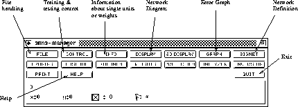

SNNS comes in two guises: It can be used via an X-windows user interface, or in 'batch mode', that is without user interaction. To run it with the X-GUI, type snns. You obviously need an X-terminal. The default setting for SNNS is to use colour screens, if you use a monochrome X-terminal start it up using snns -mono. You will loose no functionality - some things are actually clearer in black and white.
After starting the package a banner will appear which will vanish after you click the left mouse button in the panel. You are then left with the SNNS manager panel.

The SNNS manager allows you to access all functions offered by the package. It is a professional tool and you may find it a little intimidating. You will not need to use the majority of the options. You should read this introduction while running the simulator - the whole thing is quite intuitive and you will find your way around it very quickly.